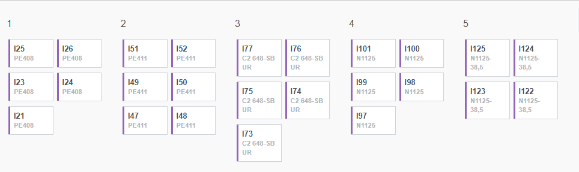

Shuttle Layout.
Layout For Shuttle view is shown in the below image. Your qc inspector can check the trouble of the machine by enter the Snap QC menu and create new inspection record, after enter the create menu qc inspector must fill all the necesesary information including which machines is are in trouble and then qc inspector click the Layout Shuttle button and the map view for the machines will showing up and qc inspector must disabled the button on the machine.
